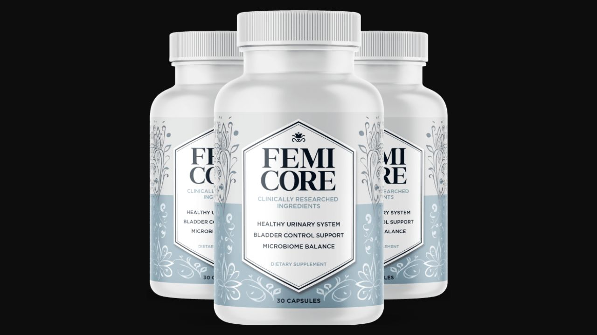

Health Reviews Labs investigated Femicore's urinary microbiome approach — and the specific mechanism that explains why most bladder supplements produce inconsistent results while this one targets the root cause differently.

9-Ingredient Urinary Microbiome Formula · 60-Day Guarantee
→ Click Here for Official SiteThe urinary tract has its own bacterial ecosystem — distinct from the gut microbiome but equally important for function. In women with healthy bladder control, Lactobacillus strains colonize the urinary lining, maintain a protective acid pH, and prevent harmful bacteria from triggering the involuntary bladder muscle contractions that cause urgency and leaks.
After menopause or perimenopause, estrogen decline reduces the glycogen availability that these Lactobacillus strains need to survive. The urinary microbiome shifts. Harmful bacteria fill the ecological vacuum. The bladder wall becomes hypersensitive, muscle contractions lose coordination, and the result is the urgency, leaks, and nocturia that millions of women experience — and too many accept as inevitable.
Cranberry extract prevents harmful bacteria from attaching to urinary tract walls. It addresses one mechanism. But it doesn't repopulate the beneficial Lactobacillus strains that declined due to hormonal changes. Femicore's 3-step approach addresses both sides of the problem.
Mimosa Pudica binds to toxins and inflammatory compounds in the digestive tract that reach the urinary system, calming involuntary bladder contractions. Bearberry's arbutin converts to hydroquinone in urine — directly inhibiting harmful bacterial growth at the urinary lining. Cranberry's proanthocyanidins prevent harmful bacteria from adhering to urinary tract walls so they can't establish colonies that trigger muscle contractions.
Five targeted Lactobacillus strains repopulate the urinary tract with the beneficial bacteria that declined after 40. These aren't generic probiotics — they're selected for urinary microbiome-specific activity, with Lactobacillus Crispatus being the dominant protective species in healthy women's urinary microbiomes. Restoring this population is what produces lasting improvement in bladder muscle coordination.
Berberine targets how bladder muscles respond to nervous system signals — making contractions more controlled and reducing involuntary urgency. As the microbiome restores and inflammation decreases, the bladder starts working with the nervous system instead of overriding it.
Binds to inflammatory compounds and toxins in the digestive tract — reducing the systemic load that reaches the urinary system and contributes to bladder wall hypersensitivity and involuntary contractions.
Contains arbutin which converts to hydroquinone in urine — an antimicrobial compound with documented urinary tract activity. Long history of use in urinary health traditional medicine, now corroborated by modern research on its mechanism.
Proanthocyanidins (PACs) prevent harmful bacteria — particularly E. coli — from adhering to urinary tract epithelial cells. Prevents colonization at the wall level rather than killing bacteria systemically.
Improves bladder muscle coordination through nervous system signaling pathways. Also provides antimicrobial support and gut microbiome balance that contributes to the gut-urinary axis connection.
Crispatus + Acidophilus + Plantarum + Gasseri + Casei — selected for urinary microbiome-specific activity. Together these strains address bacterial repopulation, mucosal inflammation, acid environment restoration, and long-term microbiome stability.
Femicore's urinary microbiome approach is mechanistically coherent and addresses a gap that single-ingredient cranberry supplements miss — the repopulation of beneficial Lactobacillus strains that decline with hormonal changes after 40. The 5-strain probiotic selection is appropriate for urinary microbiome support, the botanical ingredients address both bacterial and inflammatory aspects of bladder hypersensitivity, and Berberine's bladder muscle coordination support adds a dimension most bladder supplements omit entirely. GMP-certified US facility, 60-day guarantee, non-GMO and stimulant-free. For women with realistic expectations and consistent daily use over 60-90 days, the mechanism is the most comprehensive available in the natural bladder support category.
Antimicrobial compounds reduce harmful bacterial load. First shift in urgency frequency and severity.
Beneficial bacteria begin establishing populations at the urinary lining. Bladder muscle contractions become more controlled.
Urinary microbiome reaches restored balance. Bladder muscle coordination normalizes as bacterial ecology stabilizes. This is when the lasting benefit becomes evident.
Confirm current pricing on the official site before purchase.
9-Ingredient Urinary Microbiome Formula · 60-Day Money-Back Guarantee
→ Click Here for Official Site